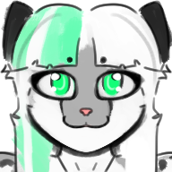

Known Relationships
Rassavet Kavinskaya - Parent Alisa Kavinskaya ---- Parent Zarya Kavinskaya ---- Sibling Rebecca ███████ ----- [NO DATA] Hex Mira ------------ [NO DATA] Timmothy Muldraugh -- [NO DATA]
Full Name ------ Amy Kavinskaya Species -------- Snow Leopard Height --------- 5ft 11in / 180 cm Weight --------- 144 lbs / 65 Kg DOB ------------ Feb. 11, 2002 (22) Gender --------- Female Sexuality ------ Straight Personality ---- [VIEW DETAILS] Ethnicity ------ Euro-American (Russian) Residence ------ New York City Favorite Food -- [NO DATA] Favorite Drink - [NO DATA]
Rassavet Kavinskaya - Parent Alisa Kavinskaya ---- Parent Zarya Kavinskaya ---- Sibling Rebecca ███████ ----- [NO DATA] Hex Mira ------------ [NO DATA] Timmothy Muldraugh -- [NO DATA]
Amy Kavinskaya (Ами Кавинская) is a professional motorcycle racer and leader of the Cyber Kids biker gang in Nocturne City. Her build is skinny and she has plantigrade legs. She has snow white hair along with two green stripes on the left side of her hair, a sock pattern on her limbs, and black stripes on the edge of her ears. Amy is mostly known for being impulsive and a thrill-seeker as well as flirty and sarcastic, she tries to avoid publicity and authority in which she has little respect for. Beneath her tough and cocky exterior however, Amy is brave and innately empathetic. She looks out for the safety and well-being of her biker gang and friends and has a soft side in which she shows around her friends. As supported by her personality, Amy likes doing dangerous things such as Racing, Car parkour, and performing stunts to impress her friends. She is noted as liking Synthwave, gaming, cars, and "techy stuff". In contrast to her soft side however, she enjoys hanging out with her friends, dancing, and napping. Comfortable clothes such as sweaters and thigh-high socks are her favorite thing to wear in the house on a cold day.
Amy was born on February 11th, 2002 to Alisa and Rassavet Kavinskaya. She grew up on a small piece of farm property situated in the state of Maryland, and would occasionally take trips to various locations such as the beaches of New Jersey or to Russia to visit relatives. As a child, Amy was very curious and loved to explore the world around her, she also had a knack for being very intelligent and loved to do things such as draw, work on puzzles, read, and build things with toys, however she had many fears growing up. In particular, fears of the dark and of thunderstorms, she was very shy and had trouble interacting and making friends with kids her age at school due to behavioral issues. She spent most of her time alone or with a guidance counselor but would eventually make friends with another girl in kindergarten (Rebecca) who was also in the counselor program. From age 4 to 9, Amy often carried around a small fox doll named Maria for comfort, made by her grandmother and the namesake coming from her great grandmother who was a well known physician during the Cold war. With money made over one summer, at the age of 13, Amy bought herself a dirt bike—an early 90s Honda XR250L—as a means of transport in lieu of a car. This bike was later modified by Amy to boost its top speed and offroad capabilities, despite the obvious hazards of a teenager riding a motorbike she would go on to use it for 3 1/2 years to get to school, ride around town, and race with friends who also owned bikes. Around 15-16 she formed a clandestine biker gang with her classmates known as Cyber Kids which was moreover just a byword for the friend group they all were in at the time, Cyber Kids fought against a rival gang of hillbilly seniors whom of which used pickup trucks to terrorize the lower ranks and the locals to an extent, they were known to take their antics too far however as one day a member by the name of Grease Gum ran over an innocent kid with his truck, nearly killing him. Cyber Kids stepped into action and began retaliatory attacks against the Terrible Trucks, slashing tires, pouring sand into fuel tanks, even assaulting Gum as requested by the boy who got ran over. Eventually all this led to a large skirmish between both groups, a day remembered as “The Road War” where Amy and her privateers engaged in a long and furious battle against the truckers, each side took heavy casualties and the last battle would be fought that evening. As Amy was finishing off one of the assailants, their pickup truck suddenly swerved into her causing her to fly off her dirtbike and collide with a pine tree, breaking several ribs and her right leg as a result along with other various major injuries. She was found by a surviving member of her gang and rushed to the hospital, clinging to life, she was in surgery by dusk and would be in a coma for upwards of 3 months due to her injuries. 3 months came and went, doctors started noting abnormal growth of her body during her vegetative state and put her through various endocrinology tests, trying to uncover why her body developed so rapidly under coma. Everyone was at a complete loss, her parents expressed she had remained mostly the same until the accident and initial tests did not yield any answers on the matter but during the first few months of her recovery, more thorough testing went underway and she was found to have a delayed puberty cycle along with lower than normal estrogen levels, however, it was difficult to determine whether the crash, mutation, or corrected estrogen deficiency was what caused her sudden growth spurt.
Amy was reported to be fully conscious by Thanksgiving, but did not remember anything beforehand and struggled to understand the changes she went through while comatose. At night in the hospital, she often woke up with intense aching all over her body and would sometimes need pain medication for it to subside so she could sleep. Her parents were beside themselves hearing what happened on that afternoon and scolded Amy for nearly killing a bunch of people, as a result she was barred from ever riding a motorcycle again and would be forced to drive a car instead, Rassavet bought her a used Subaru Legacy Sedan and taught her how to drive over the course of several months, Finally on her 18th birthday she received her license and Alisa took her for a spa day resulting in her signature hime cut and pastel green hair stripes seen on her today, a year later after Zarya had graduated college and began working for Kanto INC up in New York, Amy announced intentions to move out and go join her big sister in the city hoping to find a good line of work and move on from her biker days to become something else. She packed whatever belongings she could into her car and drove several hours before arriving in New York City, she spent a couple of months living out of her worn out sedan until finding work in the form of Dunkin Donuts in Queens, a measly job but the pay was enough for her to rent an apartment and finally settle into city life. Throughout her adult life she spent alot of time jobhopping and killing time however she could, she spruced up her car and furnished her apartment with whatever trinkets, memorabilia, and commodities she desired and made it a warm comfortable living space, It became apparent after awhile however that the donut shop would not sustain her increased rent payments and that a new line of work was needed. She moved onto being a rollback driver for Malcolm’s Towing & Salvage, a towing company run by an old obese Irish man named Malcolm Muldraugh and his son Timmothy, She worked minimum wage and was bossed around a lot but as time went on Amy managed to bond with the Muldraugh’s in an almost family-like way. Later on she learned Malcolm was a retired gun smuggler for the PIRA back during The Troubles and that he maintained a stash of unsold weaponry in a secret bunker underneath the company’s salvage yard, these would go on to be later used for their operations and Amy for self-defense and helping the Muldraugh’s with “Business” As winter rolled in up north, one night would change Amy’s life in a way nothing else had. A chance encounter with a bartender at one of the local clubs in her area, Neon Meow, yielded small talk between another snow leopard by the name of Hex Mira whom had worked here for nearly a year. Small talk initiated with the two chatting about life in the city and any interesting events that happened around town, later on Hex exclaimed that his bike broke down and was still in the shop undergoing repairs and wondered if this girl in front of him had any means of transportation. Now Amy in fact did have transportation and Hex initially asked if she had a car, however, where a car would suite his need better and why he didn't just call a cab is beyond anyone but maybe tonight he saw something in this person.. Amy stayed until his shift was complete so she could drive him back to his apartment in… a tow truck… It was awkward at first her having to explain that she only stopped by to check out this club after she got done hauling another vehicle away hours earlier but Hex saw it as a “better than nothing” scenario and climbed into the rollback along with Amy. They talked up a storm on the ride to his apartment with them discussing their lines of work and other stuff, eventually she arrived at his place and Hex had offered for her to spend the night which she happily obliged. From there the two spent a lot of time together, going back and forth to each other's apartments to hang out and bond further, they became great friends and Hex introduced Amy to a boatload of new people she became fond of and built a large interconnected group of friends that even outdid her old biker gang of the past